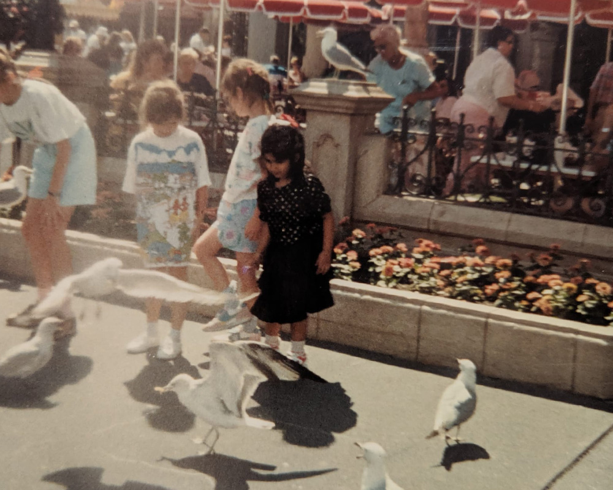
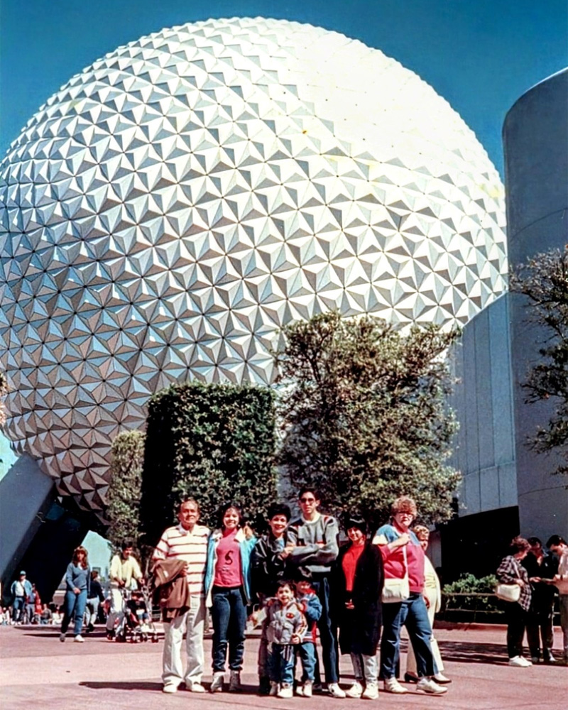

What to bring: Valid military ID (for the service member — Marc). All guests in the party who will receive discounted tickets should ideally be present, though the service member activates on their behalf.
Where to go: Guest Services at Disney Springs is located near the Town Center area. The activation process takes a few minutes — have everyone's names ready.
After activation: The day is ours. Disney Springs is a free-entry shopping, dining, and entertainment district. World of Disney store, the LEGO Store, The Edison bar, Homecoming restaurant, AMC Disney Springs theater. No park tickets needed — just arrive and explore. Confirm our POFQ check-in and get settled for the week.
Step 2: Drive the Tesla from POFQ to Boardwalk Inn. Park the car there for the duration of the Disney stay — it's walking distance to EPCOT and a direct bus to MK, HS, AK, and EPCOT all run from Boardwalk.
Step 3: Take the Boardwalk Inn bus directly to Magic Kingdom. Boardwalk is an EPCOT-area resort — buses run directly to all four parks including MK main entrance. No transfer needed.
Step 4: End of MK night — Minnie Van or rideshare from inside MK to Boardwalk Inn. Check in. Bags will be waiting.
✓ One Multi Pass per day total: Cannot buy both AK and HS Multi Passes. Chose HS — correct call given Thrill-Data sell-out times.
✓ Single Pass does not trigger rolling chain: Only Multi Pass redemptions start the rolling chain. FoP at AK triggers nothing. Rolling chain begins at HS after Slinky tap at 3:10 PM.
✓ Grace period: officially ±15 minutes per Disney cast member. Arrive within your window.
Real Disney days never follow a script. Use this as a reference and adapt freely. The Jungle Cruise LL at 9:35 AM is your first fixed anchor — everything before that is flexible early entry time.
After each Multi Pass tap, immediately check the app for your next rolling pick. Target: Tiana's Bayou Adventure (~10 AM) → Peter Pan's Flight (~12–1 PM) → Space Mountain / Big Thunder for afternoon slots. Tiers disappear after first tap.
~8:45 PM: Head to TRON standby queue. Ride during fireworks (20–35 min wait, vs. 60–90+ earlier). Exit TRON ~9:20–9:30 PM.
After TRON: Keep riding. Space Mountain (~15–25 min during fireworks), Seven Dwarfs Mine Train, Big Thunder Mountain, PeopleMover — all have dramatically reduced waits during and immediately after the show. Stack rides for 30–45 min until the Main Street wave thins.
~9:45–10 PM: Exit when the crowd has organically dispersed. Request Minnie Van to Boardwalk Inn from inside the park. Minnie Van pickup is inside the park gates — bypasses the Main Street crush entirely. Cost: ~$35–50, split four ways = ~$9–13 each.
If Minnie Van isn't available: exit front gates (~9:40 PM), walk 15–20 min north to the Contemporary Resort, call Lyft/Uber from the Contemporary's address. Far less chaotic than the MK rideshare staging zone. The Outer Rim bar is there if the group wants a drink while waiting.
The Safari timing is the one true non-negotiable — animal activity is best before 9:30 AM and that window closes regardless. Everything else adapts around it and around the confirmed HS LL windows.
Tap Slinky Dog Dash the moment the 3:10 PM window opens. The actual ride is ~3 min — if you tap at 3:10 PM and wait 15–20 min in queue, you exit by ~3:30–3:35 PM. That gives 50 min to walk to Sci-Fi Dine-In (a short walk from Toy Story Land). Comfortable. Do not delay the Slinky tap.
Space 220 at 3 PM and the 7:15 PM International Gateway departure are firm. Everything else adapts around them. The Mission: SPACE / Living with the Land window overlap (2:10 PM / 1:25 PM) is handled by the ±15 min grace — tap Mission: SPACE at 1:25 PM, exit by 1:50 PM, tap Living with the Land at 2:10 PM. Both are in the same area of World Discovery/World Nature.


The Seas with Nemo & Friends (short standby, relaxing family ride). UK Pavilion Rose & Crown for a pint. Final Japan and France shopping. Any additional rolling picks as they become available.
What Disney provides: Coke, Diet Coke, Sprite, water, pre-packaged chips/cookies/treats. Fireworks soundtrack plays on the boat. Captain provides Disney trivia.
What to bring: BYOB allowed — no glass. Bring wine/champagne in cans or plastic cups from the Boardwalk bar. Light jacket or wrap (can be cool on the water at night). Low-light mode camera/phone ready.
Onboard fun: Heads Up! app (133 decks — pick a few favorites in advance). Custom Disney trivia game. The captain may also run ship trivia. Tip appreciated for the captain.
No restroom on the boat — use facilities at Boardwalk before heading to the dock. Total experience ~1 hour 45 min.
This section is a planning framework to be refined with more data. Confirmed: May 20 = Islands of Adventure + Universal Studios Florida. May 21 = Epic Universe. Resort transportation will be used to and from Epic Universe on May 21.
May 21 (Thu) → Epic Universe: Epic Universe is on the south campus, approximately 15 minutes from Sapphire Falls. We use resort transportation to and from Epic Universe both ways — no driving needed. A full day at Epic's five themed worlds. The Mandalorian & Grogu at City Walk AMC at 8 PM is the cherry on top if we want it — resort transport back to the north campus in the evening makes this possible.
Why this order: IOA with fresh legs and EPA gives us the best possible shot at multiple VelociCoaster laps. Epic Universe, while incredible, has more indoor/dark ride variety that doesn't demand the same early-morning coaster sprint intensity.
- ⭐Harry Potter and the Battle at the Ministry — flagship dark ride, the most technically ambitious attraction in the park
- ⭐Ministry of Magic queue + theming — the detail level rivals Diagon Alley; explore it slowly
- ⭐Dragon Racers — dual-track launch coaster, one of the best new coasters on property
- ●Isle of Berk theming + dragon encounters — atmospheric walkthrough experiences
- ⭐Mario Kart: Bowser's Challenge — AR headset kart racing through iconic tracks
- ⭐Donkey Kong Mine-Cart Madness — high-speed outdoor coaster
- ●Power-Up Band interactive quests — scatter coins and beat bosses throughout the land
- ⭐Monsters Unchained: The Frankenstein Experiment — indoor dark coaster, highly themed
- ●Celestial Park — the central hub with water features; the most beautiful park entrance at Universal
- ⭐VelociCoaster — Rope drop at 8 AM with EPA. Ride it multiple times while waits are 5–15 min before the crowds build. 155 ft, 70 mph top-hat launch coaster — one of the best in the world. This is the primary reason IOA is on Day 1 with fresh legs.
- ⭐Hagrid's Motorbike Adventures — EPA rope drop immediately after VelociCoaster laps, or have Express Pass ready. One of the most immersive ride experiences ever built. Lines build extremely quickly.
- ⭐Harry Potter and the Forbidden Journey — castle walkthrough + dark ride. Do after VelociCoaster while lines are still manageable.
- ●Jurassic World Ride — water-based, you will get wet. Group decision.
- ●The Amazing Adventures of Spider-Man — classic IOA dark ride.
- ⭐Hogwarts Express — Different experience each direction (Hogsmeade → Diagon Alley and back). Requires Park-to-Park ticket.
- ⭐Hollywood Rip Ride Rockit — launched coaster, pick your own hidden song.
- ●Race Through New York Starring Jimmy Fallon — air-conditioned, fun group ride.
- ●Revenge of the Mummy — classic launched indoor coaster, surprisingly intense.
- ⭐Harry Potter and the Battle at the Ministry — Ministry of Magic world, flagship dark ride, most technically ambitious attraction in the park
- ⭐Dragon Racers — How to Train Your Dragon · Isle of Berk · dual-track launch coaster
- ⭐Mario Kart: Bowser's Challenge — Super Nintendo World · AR headset kart racing through iconic tracks
- ⭐Donkey Kong Mine-Cart Madness — Super Nintendo World · high-speed outdoor coaster
- ⭐Monsters Unchained: The Frankenstein Experiment — Celestial Park · indoor dark coaster, highly themed
- ●Power-Up Bands — Super Nintendo World interactive wristband quests throughout the land
- ●Celestial Park — central hub with water features; the most beautiful park entrance at Universal
Departure math: Flight at 6:50 PM → airport by 4:45–5:00 PM → leave Disney park by ~3:30–4:00 PM (depending on park + traffic). This gives a solid morning and early afternoon, roughly 9 AM–3:30 PM.
Best park option: A park that's easy to enter, easy to leave, and has rides they still want to do. EPCOT (familiar, IG entrance nearby if staying at Boardwalk area) or Magic Kingdom (always more to do) are the top candidates.
Logistics: Marc & Freha pack their own bags at Sapphire Falls, leave bags at Sapphire Falls bell services or bring in the Tesla. Pack Rob & Jenna's bags in the Tesla. Drive to Disney from Universal area (~30–40 min). After airport drop: Marc & Freha drive directly to Gainesville (~1.5–2 hrs from MCO). Return to Sapphire Falls to collect Marc & Freha's bags beforehand, OR have them already in the Tesla.
This is an option, not a commitment. Works best if the group has energy after two Universal days. If everyone's exhausted, a relaxed morning at the resort before airport departure is equally valid.
Recommended: Request a rideshare XL (minivan or SUV) for the Boardwalk Inn → Loews Sapphire Falls leg on the night of May 19 (~25–30 min drive, ~$25–40 via Uber XL). Marc drives the Tesla separately or as a second vehicle. This way everyone and all luggage travel comfortably without reshuffling or leaving bags behind.
Alternatively: If Rob & Jenna have lighter luggage, the Tesla + one rideshare car may work. Assess at Boardwalk pickup and decide in the moment.
If doing the May 22 Disney day: Drive from Disney park → MCO drop → Gainesville. Simple.
If skipping May 22 Disney: Depart from Sapphire Falls, drive to MCO, drop Rob & Jenna, continue to Gainesville.
This guide uses shorthand throughout to keep things concise on mobile. Here's every acronym decoded in one place.